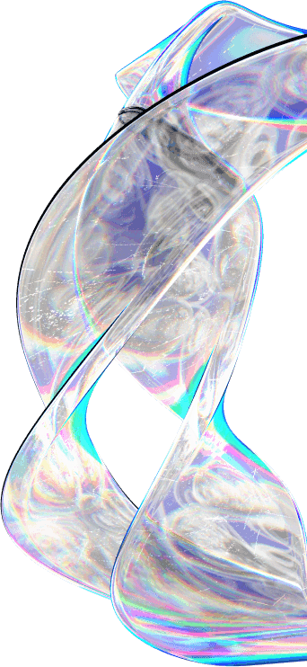

@@include('html/head.html', { 'title': 'Decentralized decisions - Документы' })
@@include('html/components/header.html', { 'el': 'site__header header--sticky' })
Главная
Документы
Документы
Выписка из ИРГЮЛ
Карточка предприятия АО УК ДР
Карточка предприятия ООО ДР

@@include('html/components/footer.html', { 'el': 'site__footer' })
@@include('html/modal.html')
@@include('html/script.html')